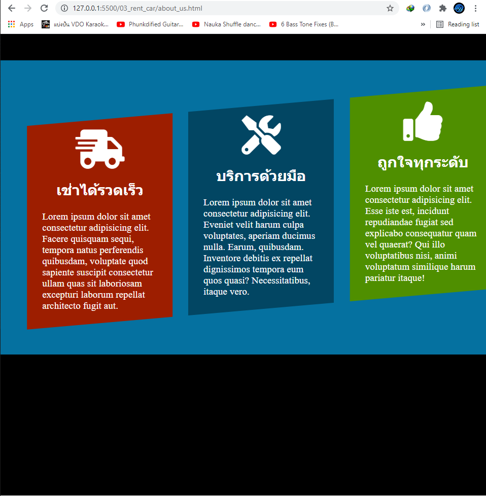
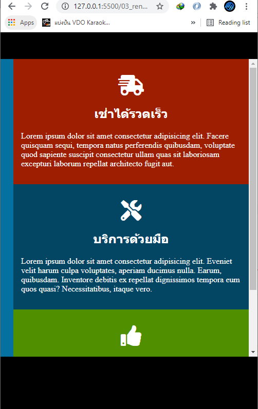
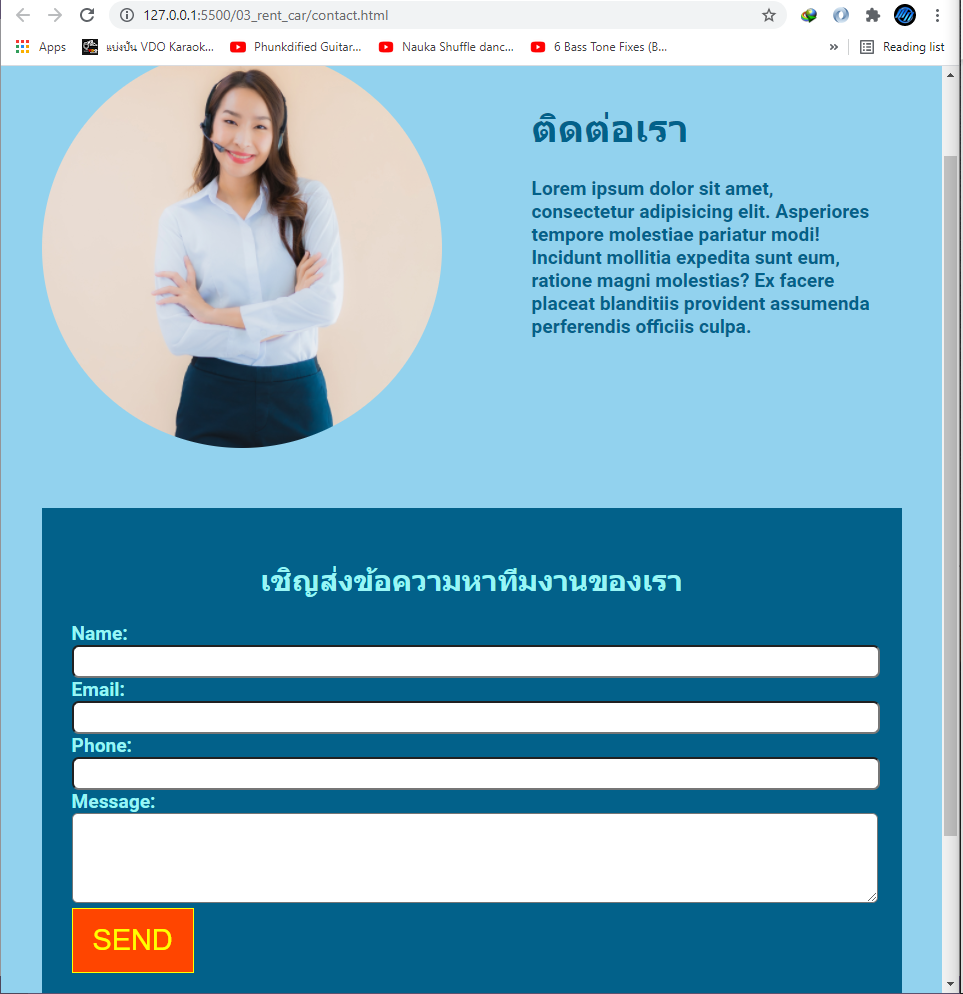

รูปด้านบนคือการทดลองสร้าง web site จาก workshop rent car ซึ่งเป็นหน้า index.html หรือหน้าแรกของ web page เป็นการรวมความรู้จาก html, css และ JavaScript โดยเราสามารถใส่ animation โดยการใช้ transition ได้มีการใช้ flex ในการจัด div ต่างๆส่วนเรื่อง icon ใช้เป็น font awesome
รูปด้านบนคือหน้า web page about_us.html ซึ่งใช้การ rotate 5 องศา เพื่อให้ div หมุนไปทางที่ต้องการจากนั้นทำการซ่อนส่วนที่ไม่ต้องการไว้ใน div แม่อีกที โดยการใช้ overflow: hidden นอกจากนั้นเมื่อทำการย่อขนาดจะทำการหมุนกลับมาแสดงในขนาดที่เล็กลงและเรียงกันแบบ column ดังรูปด้านล่าง
 รูปด้านบนคือหน้า web page contact.html ซึ่งในหน้านี้จะมีส่วนประกอบของ form เป็นส่วนใหญ่ส่วนรูป call center ด้านบนใช้ border-radius ทำให้ div มีลักษณะเป็นวงกลม